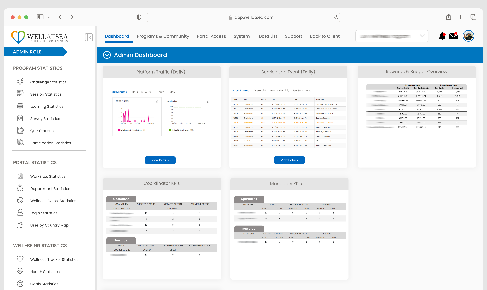
PRODUCT DESIGN · WEB
WellAtSea Web 2.0
End-to-end UI direction for a multi-role platform — simplifying navigation, dashboards and operational workflows.
UI/UX DESIGNER · PRODUCT DESIGN · DIGITAL EXPERIENCE
I bring 20+ years across web design, development, technical support, product QA and digital transformation — combining visual thinking with a practical understanding of users, workflows and implementation.
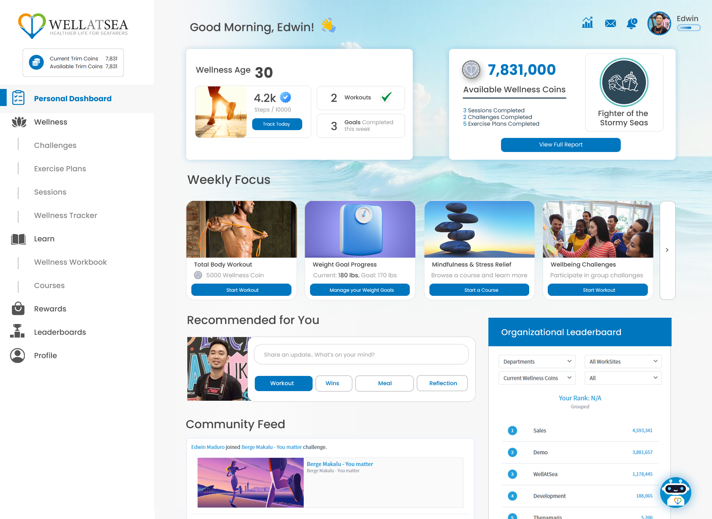
01 / SELECTED WORK
A selection of product, interface and digital transformation work across web, mobile and internal platforms.

PRODUCT DESIGN · WEB
End-to-end UI direction for a multi-role platform — simplifying navigation, dashboards and operational workflows.
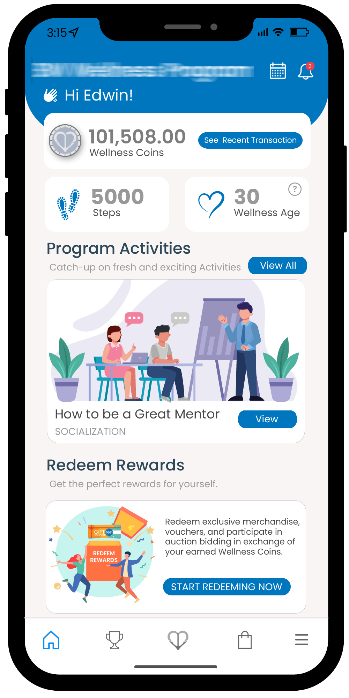
UI/UX · MOBILE
A mobile experience built around clear journeys, accessible information and practical daily actions.
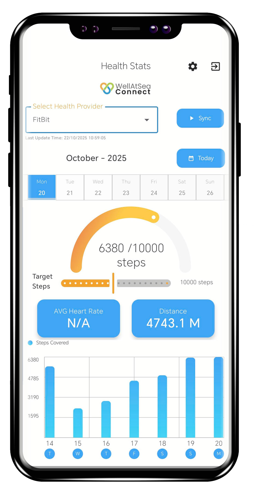
APP DESIGN · UX
WellAtSea Connect is a dedicated Android application that automatically syncs health and activity data from compatible wearable devices and pedometers. Supporting Google Fit, Fitbit, and Samsung Health through Health Connect, the app tracks daily step counts, average heart rate, and distance traveled. This project showcases my UI/UX mockup design for a seamless health-tracking experience that helps seafarers monitor their daily physical activity and wellness.
INTERNAL PLATFORM · AUTOMATION
Designed and developed the WellAtSea HelpDesk using Microsoft SharePoint to centralize support requests, improve ticket tracking, and provide better visibility into issue resolution. I also implemented automated ticket status email notifications using Microsoft Power Automate, keeping users informed throughout the support lifecycle.
To support operational monitoring and decision-making, I developed monthly and quarterly HelpDesk reports using Microsoft Power BI, providing insights into ticket volume, status, trends, and support performance.
02 / PREVIOUS WEBSITES
A visual archive of websites and digital experiences from my earlier web development and design work.
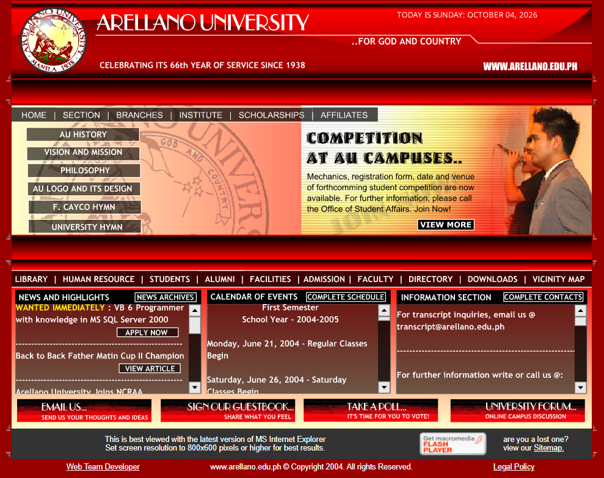
WEB DESIGN · DEVELOPMENT
Developed and supported a university website designed to present academic programs, admissions information, campus details, news, and institutional resources in a structured and accessible digital experience.
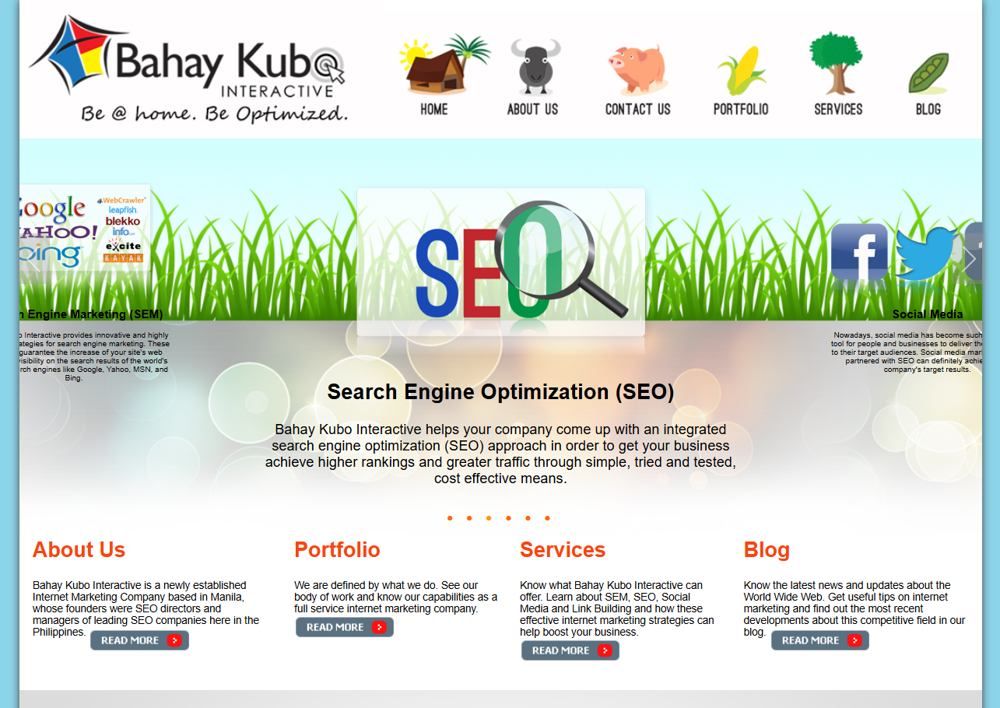
WEB DESIGN · UI
Provided web optimization and enhancement services for an interactive Bahay Kubo experience, focusing on improving website performance, usability, content presentation, and overall user experience.
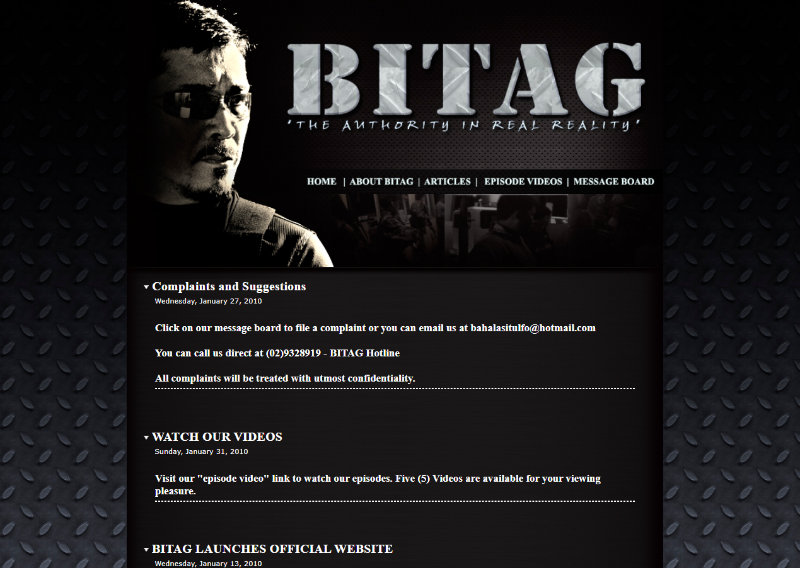
WEB DEVELOPMENT
Developed a web presence for Bitag, the investigative and public-service television program associated with Ben Tulfo, providing an online platform for program information, content, and audience engagement.
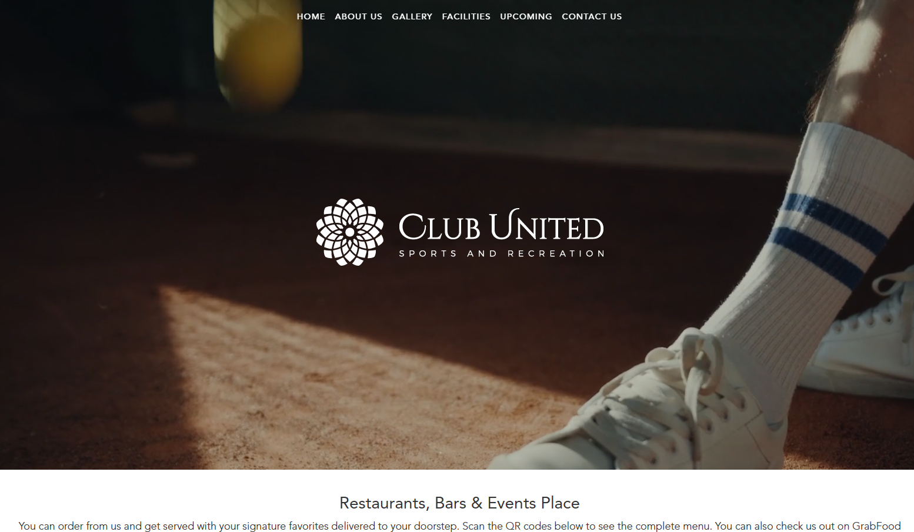
CORPORATE · WEB
Developed a website for Club United, a Metro Manila sports and recreation complex, showcasing its sports facilities, recreational activities, events, amenities, and community-focused services.
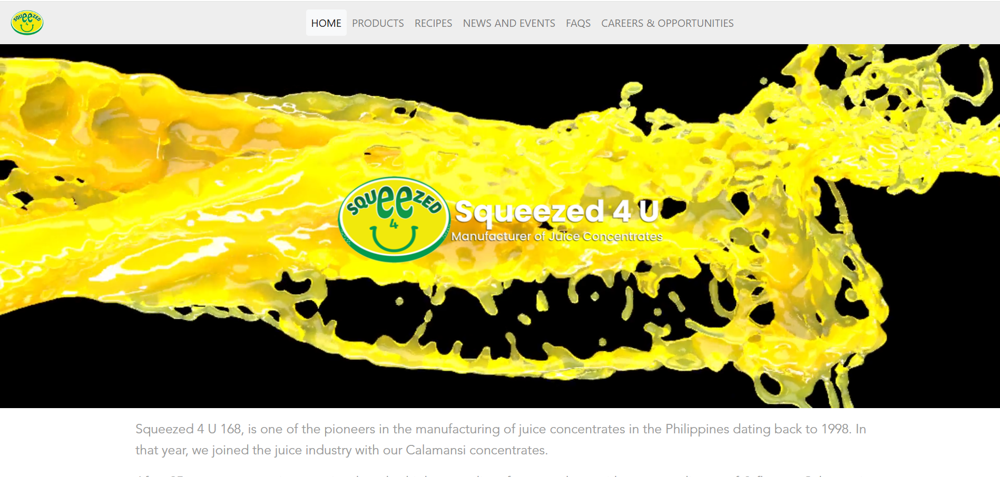
WEB DESIGN · DEVELOPMENT
Developed the corporate website for Squeezed 4 U, a Philippine manufacturer and distributor of concentrated juice products, presenting its products, company information, and business services through a product-focused web experience.
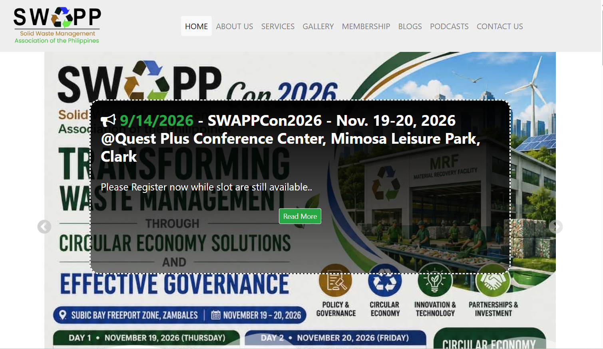
WEB DESIGN · DEVELOPMENT
Designed and developed the website for SWAPP, a non-profit organization focused on solid waste management education, training, technical assistance, research, and professional networking in the Philippines. The website provides information about the organization, programs, services, membership, and industry activities.
03 / VIDEO PROJECTS
Video editing, product tutorials, promotional pieces and internal communications created to explain products and make complex workflows easier to understand.
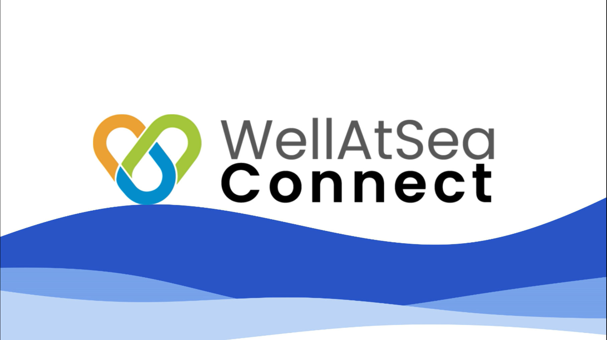
PRODUCT VIDEO
Marketing and product video showcasing the experience and value of WellAtSea Connect.
Add video:video/wellatsea-connect.mp4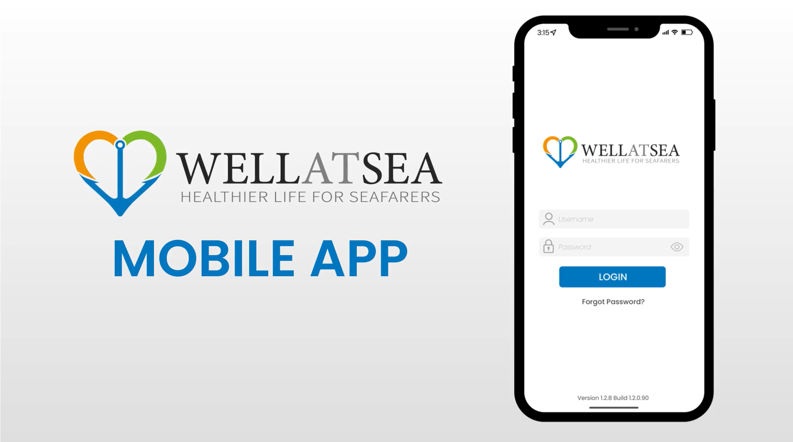
TUTORIAL · PRODUCT
A guided tutorial created to help users understand key features and workflows in the mobile experience.
Add video:video/mobile-2-tutorial.mp4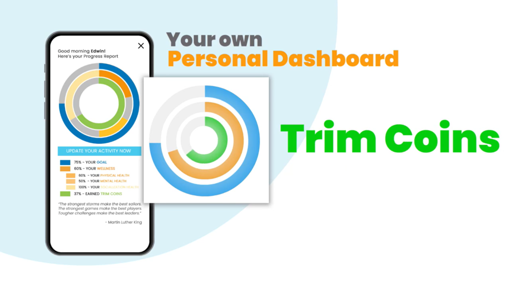
PROCESS VIDEO
A teaser.
Add video:video/smartwatch-binding.mp4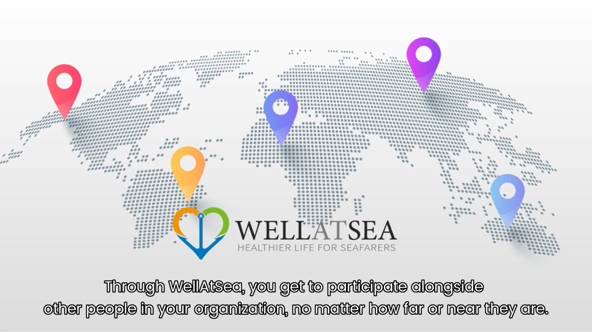
PROMOTIONAL · 60 SEC
A short-form teaser created to introduce a product experience through motion, pacing and visual storytelling.
Add video:video/WellAtSea_TeaserV4.mp404 / HOW I WORK
My edge is the overlap between design, product behavior, users and implementation.
I start with the user, the business goal and the workflow — not the screen.
I turn complicated requirements into clearer information architecture and actionable interfaces.
I use UAT, QA and real product behavior to catch what a static design file cannot.
I bridge product, engineering, operations and users so ideas can actually ship.
05 / ABOUT EDWIN
My career has moved across web development, digital content, technical support, product quality assurance and UI/UX. That mix shaped how I design: I care about the visual system, but also about what users are trying to accomplish, how teams operate and what developers can realistically build.
At WellAtSea, I worked across product development, engineering, operations, marketing, client success and IT — contributing to product releases, UI/UX redesigns, UAT, process automation and user enablement.
TOOLKIT
06 / DESIGN ROOTS
Before product design became the focus, I built websites, digital experiences and visual work — including recognition in web design and creative competitions.
07 / LET'S CONNECT
I'm open to UI/UX, product design and digital experience opportunities where design can solve real problems.